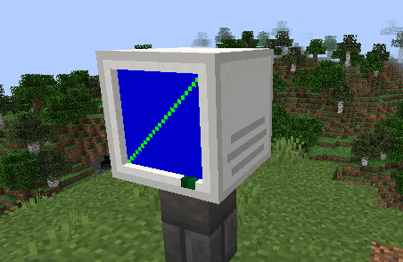

Color Display documentation
Introductions
The Color Display is a large fun multi block color graphical display, like the screen of a computer!

When multiple units are placed together they will merge to form a larger display, from the perspective of a computer they are all one peripheral, will appear as one peripheral, and will work the same as a normal screen object but with a larger screen size.
You can also shift click the display with an empty hand to clear it, unless disabled in mod settings.
Or shift while placing it to make it only connect with other displayed placed while shifting.
The Color Display is categorized as "neetcomputers:color_display" in the IO API
The API is the exact same as the baseline version of the Screen API, plus a draw function!Lookup table
| draw() | Updates the blocks display |
Functions in detail
draw()
Updates the blocks display, works the same as it does in the screen api, update capped to every other tick
Parameters: None Returns: None